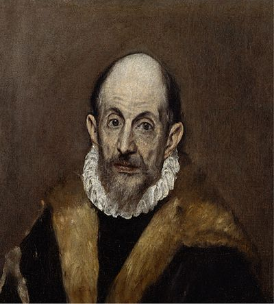
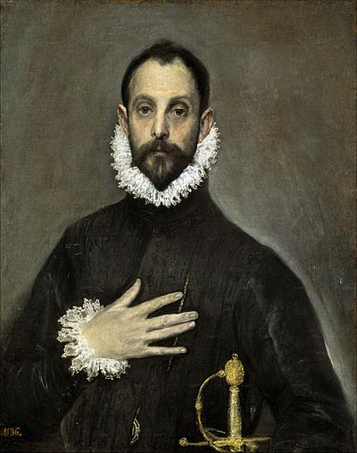
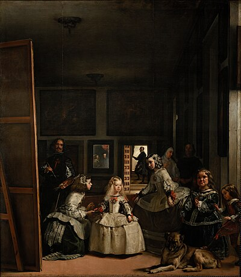
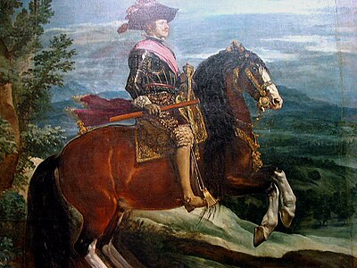
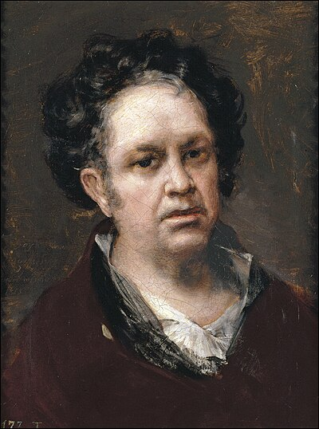
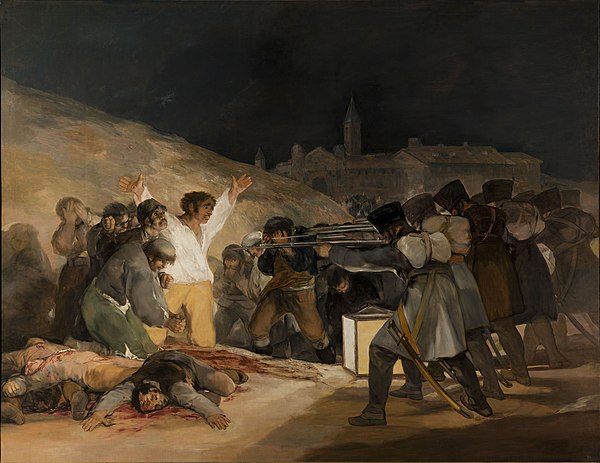
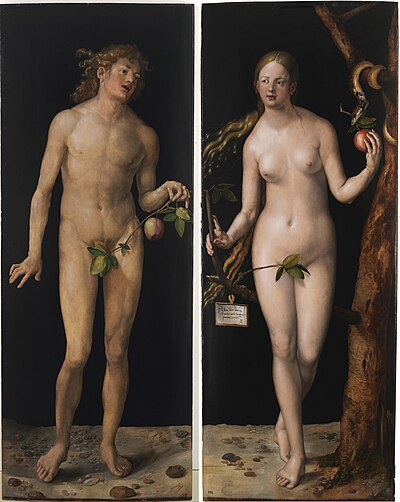
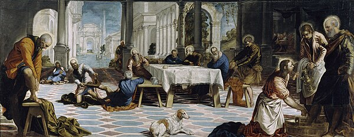

By Gonzalo Ruiz de Villa, 8 years old
Hi everyone! My name is Gonzalo Ruiz de Villa and I went to the Prado Museum in Madrid. It was SO cool, I have to tell you about it!
I went with my brother Alejandro and my friends Juan and Claudio. We also had a guide just for us. We felt super important!
The guide knew EVERYTHING about the paintings. She told us secret stories about the artists. It was like being a detective!

First, we saw paintings by El Greco. His people looked super tall and a little weird, like they were made of stretchy gum!

The nobleman looked very serious and important, like a principal but fancier. The guide said El Greco used light and shapes to show how people were feeling inside!
Then we saw paintings by Velazquez. He was like the royal family's personal photographer, but with paint! My favorite was "Las Meninas."

It's a HUGE painting with a little princess, her helpers, and a big fluffy dog. The best part? Everyone in the painting is looking right at YOU!
When you move around, their eyes FOLLOW you. Like they're alive! It's the coolest trick I've ever seen in a painting. A bit spooky too!

Velazquez painted for King Philip IV. Imagine having someone paint your family instead of taking selfies. That was life back then!

After that, we saw paintings by Goya. Some were bright and happy, but others were really dark and a little scary. He painted all kinds of feelings.

I remember "The Third of May 1808." It shows a really sad moment in history. It made me feel quiet inside. Some art makes you think a lot.

We saw a painting of Adam and Eve with a tree and a sneaky snake. The guide said this is one of the oldest stories ever told!

We also saw Jesus washing the feet of his friends. That means even if you're super important, you should still be nice and help others. I liked that lesson!
The guide showed us how painters use colors, light, and shadows to make things look real. Some paintings looked SO real I wanted to touch them (but you can't!).
The museum was ENORMOUS and SO beautiful. Walking inside felt like traveling back in time. Like a time machine but with paintings!
I LOVED this visit! I learned so much and had the best time ever. I really want to go back someday. Thanks for listening to my story!